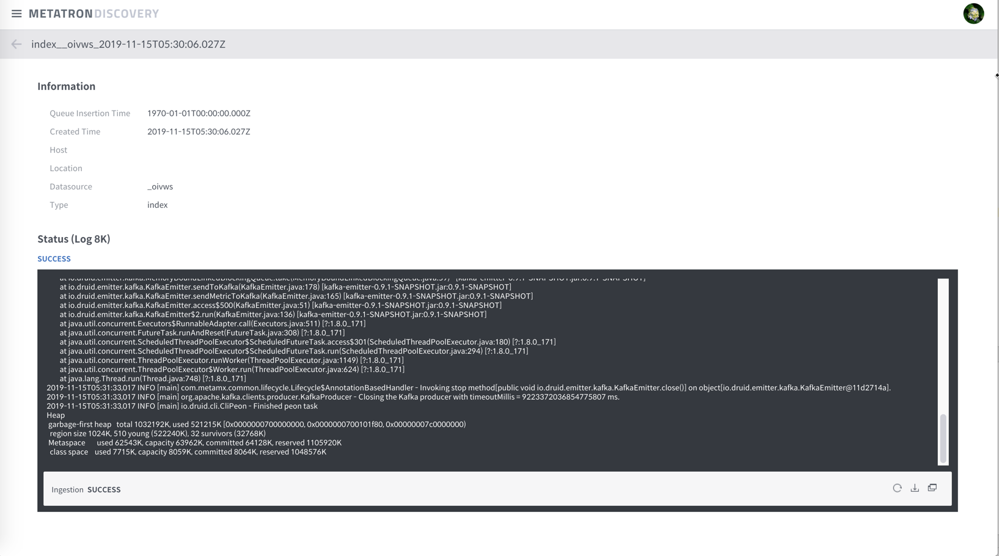
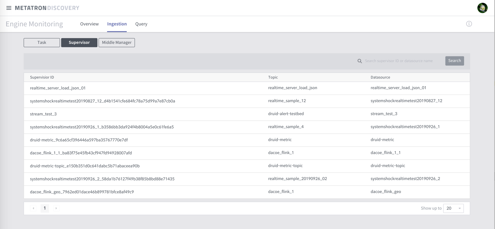

Ingestion¶
Druid Indexing Service 모니터링입니다. 해당 페이지에서는 Index task의 실행 상태 및 task 관련 정보를 제공합니다.
아래와 같은 정보를 제공해줍니다.
- MiddleManager 상태 확인 가능
worker 별 용량, 현재 사용량 현황
- Supervisor 상태 확인 가능
supervisor 별 상태
terminate (suspend, reset) 기능 제공
- Task 상태 확인 가능
runningTasks, pendingTasks, waitingTasks, completedTasks
log, kill 기능 제공
Lockbox 상태 확인 가능
Ingestion 에는 supervisor와 middle manager에 대한 정보도 같이 확인할 수 있다.
Tasks¶
Task는 다음과 같이 4개로 분류할 수 있습니다.
pending task: worker 할당을 기다리는 task
running task: 실행중인 task
waiting task: lock을 기다리는 task
completed task: 완료된 task로 SUCCESS, FAIL의 두 상태로 나뉜다.
Task 상세 정보 및 메뉴는 아래와 같습니다.
Field |
Description |
Example |
|---|---|---|
id |
taskId |
|
type |
||
dataSource |
||
createdTime |
||
queueInsertionTime |
||
status |
||
runnerStatusCode |
||
duration |
||
locationhost |
||
locationport |
||
payload |
||
status |
상태 |
|
log |
||
log last 8k |
||
kill |
||
ingestion |
이와 같습니다.

상세 화면을 살펴보면 다음과 같습니다. (아래는 Kafka를 사용한 경우입니다)


아래는 Kafka가 아닌 일반 Task의 경우의 모습입니다.

Supervisors¶
실행중인 Supervisors의 모니터링을 할 수 있다. 확인 가능한 Supervisor 상세 정보 및 menu는 다음과 같다.
Field |
Description |
Example |
|---|---|---|
Status |
get supervisorIDs로 제공되는 supervisor는 모두 running 상태임 |
|
Datasource |
||
Detailed Status |
status API 로 제공되는 정보 |
|
Lag |
kafka의 lag 정보. emitter 사용 |
|
Spec |
||
Shutdown |
Terminate supervisor. 관련된 task도 함께 kill 됨 |
이와 같습니다.
